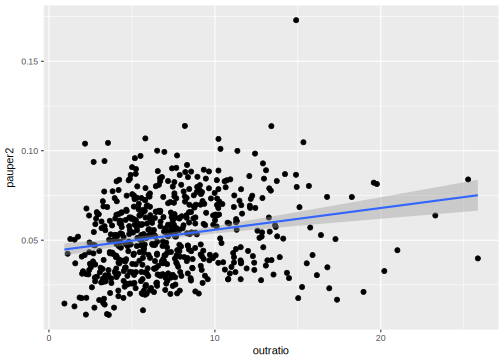

Chapter 12 Yule’s Pauperism Data
Example from Yule (1897),Yule (1896a),Yule (1896b),Plewis (2017).
See Stigler (2016),Stigler (1990)
12.1 Setup
library("tidyverse")12.2 Examples
datums::pauperism_year %>%
filter(year == 1871) %>%
select(outratio, pauper2) %>%
drop_na() %>%
ggplot(aes(x = outratio, pauper2)) +
geom_point() +
geom_smooth(method = "lm")
datums::pauperism_year %>%
filter(year == 1871) %>%
select(outratio, pauper2) %>%
drop_na() %>%
cor()## outratio pauper2
## outratio 1.0000000 0.2105665
## pauper2 0.2105665 1.0000000Regressions for each year
datums::pauperism_year %>%
group_by(year) %>%
summarise(mod = list(lm(outratio ~ pauper2, data = .)))## # A tibble: 3 × 2
## year mod
## <int> <list>
## 1 1871 <S3: lm>
## 2 1881 <S3: lm>
## 3 1891 <S3: lm>datums::pauperism_year %>%
filter(year == 1871) %>%
select(outratio, pauper2) %>%
drop_na() %>%
lm(pauper2 ~ outratio, data = .)##
## Call:
## lm(formula = pauper2 ~ outratio, data = .)
##
## Coefficients:
## (Intercept) outratio
## 0.043637 0.001218References
Yule, G. 1897. “On the Theory of Correlation.” Journal of the Royal Statistical Society 60 (4). [Wiley, Royal Statistical Society]: 812–54. http://www.jstor.org/stable/2979746.
Yule, G. Udny. 1896a. “Notes on the History of Pauperism in England and Wales from 1850, Treated by the Method of Frequency-Curves; with an Introduction on the Method.” Journal of the Royal Statistical Society 59 (2). [Wiley, Royal Statistical Society]: 318–57. http://www.jstor.org/stable/2979777.
Yule, G. 1896b. “On the Correlation of Total Pauperism with Proportion of Out-Relief.” The Economic Journal 6 (24). [Royal Economic Society, Wiley]: 613–23. http://www.jstor.org/stable/2957204.
Plewis, Ian. 2017. “Multiple Regression, Longitudinal Data and Welfare in the 19th Century: Reflections on Yule (1899).” Journal of the Royal Statistical Society: Series A (Statistics in Society), February. Wiley-Blackwell. doi:10.1111/rssa.12272.
Stigler, Stephen M. 2016. The Seven Pillars of Statistical Wisdom. Harvard University Press. http://www.ebook.de/de/product/25237216/stephen_m_stigler_the_seven_pillars_of_statistical_wisdom.html.
Stigler, Stephen M. 1990. The History of Statistics: The Measurement of Uncertainty Before 1900. HARVARD UNIV PR. http://www.ebook.de/de/product/3239165/stephen_m_stigler_the_history_of_statistics_the_measurement_of_uncertainty_before_1900.html.